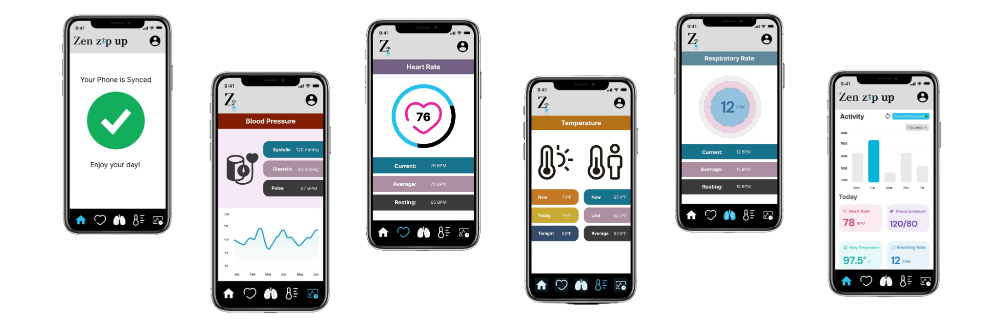
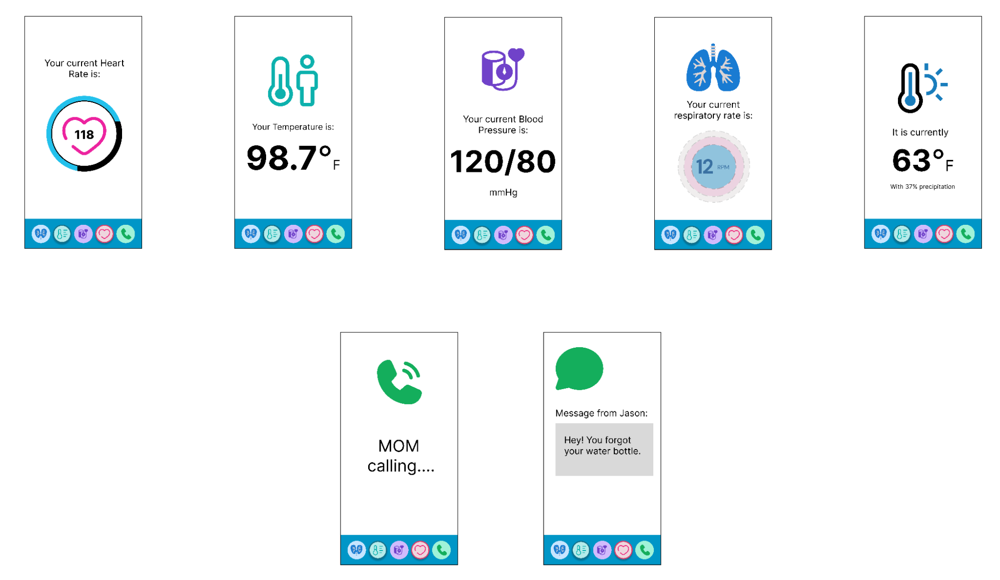

Zen Zip Up - Wellness Jacket: Smart Wearable Health Monitoring System
Introduction
Zen Zip Up is a smart wearable designed to integrate real-time health monitoring and seamless digital connectivity into a comfortable, everyday garment. Designed for active individuals, students, and professionals, this jacket combines biometric tracking, environmental sensing, and hands-free communication to support wellness and productivity throughout the day.
The core purpose of our design is to provide users with continuous health insights and ambient awareness without the need for multiple devices - all while enabling effortless, intuitive connectivity.
Key Functionalities
Our Zen Zip Up jacket includes several innovative features:
- Built-in headphones discreetly integrated into the hood for wireless audio calls and music playback
- An infrared sensor on the hood that measures forehead temperature without requiring direct contact
- An external climate sensor on the shoulder that monitors ambient temperature and humidity levels
- An adjustable chest strap with soft, embedded sensors that tracks heart rate and breathing rate during movement or rest
- A blood pressure cuff integrated into the sleeve to replicate medical-grade readings
- A wrist-mounted heart rate sensor positioned opposite the connectivity module to provide redundancy and ensure accuracy
- A Bluetooth sync module on the wrist that securely pairs the jacket with the user's smartphone via a pair button
- A forearm display panel that presents a minimal, low-clutter screen displaying live health metrics, notifications, incoming calls, and texts
All sensor data is automatically transmitted via Bluetooth and displayed on both the forearm screen and the paired smartphone, ensuring users can access their health information in real time, whether they're exercising, studying, or commuting.
Sketches and Early Design Explorations
User Benefits
Users gain continuous health monitoring with real-time tracking of heart rate, breathing, body temperature, and blood pressure. Zen Zip Up also enhances environmental awareness by providing alerts for extreme or changing ambient conditions such as heat and humidity.
Hands-free connectivity allows for wireless access to calls, texts, and notifications without the need to take out a phone. Feedback is delivered through clear yet unobtrusive visual cues on the forearm display, with optional audio updates for added convenience. The fully integrated experience means all features are built directly into the jacket, eliminating the need for additional wearable devices.
Feedback
We collected feedback from three people who reviewed the initial concept sketches and interaction ideas:
User 1: 21-year-old college student
"The built-in headphone feature is great for workouts. I like the idea of checking heart rate and breathing while running. But the chest belt might be uncomfortable. If anything I'd want it to be super soft and not rub while I move. Will the jacket give alerts at any point? What will it run on? Wireless charging? Batteries?"
Based on this feedback, we integrated a minimal visual display on the forearm for key metrics, text messages, and calls.
User 2: A medical doctor
We consulted a licensed physician to evaluate the sensor placement and measurement logic in our concept. The doctor affirmed that pulse readings could be taken from multiple locations but confirmed that the wrist is an ideal placement for consistent heart rate monitoring.
Regarding temperature measurement, the doctor noted that skin temperature is not a medically accurate indicator of internal body temperature, and recommended that we measure core body temperature using a sensor positioned on the forehead, which is a medically recognized location. Based on this, we relocated the temperature sensor to the inside of the hood, allowing it to capture the user's forehead temperature non-invasively.
User 3: Medically Trained Peer (EMT)
We also received feedback from a medically trained peer with EMT experience. By the time we spoke, we had already integrated changes based on prior medical advice. The EMT confirmed that our revised sensor placements were reasonable and that the health metrics we proposed could be collected from those specific areas.
He also offered input on the appropriate terminology and types of biometric data to display in the user interface, helping us ensure medical accuracy and clarity in the information presented to users.
Getting feedback from potential users was helpful and led us to multiple iterations to improve the overall user experience of Zen Zip Up.
Physical Model with Annotations
Our physical model demonstrates the strategic placement of sensors and components to maximize both functionality and comfort:
- Hood-integrated headphones with temperature sensor
- Shoulder-mounted climate sensor
- Chest strap with breathing and heart rate monitoring
- Sleeve-integrated blood pressure cuff
- Wrist module for connectivity and redundant heart rate monitoring
- Forearm display panel for information viewing
Mid-Fidelity UI Screen
 Video Demonstration
Video demonstration of the Zen Zip Up jacket's features and functionality.
Design Justification & Reflection
Our design process was driven by a focus on real-time health monitoring integrated into an everyday item: a jacket. We prioritized sensor placement that aligned with medical standards while ensuring comfort and natural interaction. The decision to include a screen on the forearm and a wrist module for syncing was based on maintaining accessibility without overwhelming the user with constant feedback or overdependence on their mobile phone.
Our iterations led us to move from a bulky prototype to one with more integrated sensor housings. We also introduced touchless elements, like head/hood temperature checks and wrist-based tapping.
Reflections on feedback:
Our design process began by identifying important health-monitoring and communication needs for everyday users. We prioritized biometric accuracy, comfort, and ease of use. We also explored different options through sketches, and user feedback helped guide refinements to comfort and functionality.
The feedback we received from our first prototype cycle taught us the importance of clear user scenarios in presenting our ideas. For this round, we incorporated more contextual storytelling (e.g., use while running or studying), which helped users better understand the functionality and provide relevant suggestions.
Going forward, we aim to refine how we present design tradeoffs, especially around comfort vs. accuracy. Including more usability testing early on will also help us catch issues before committing to high-fidelity prototypes.